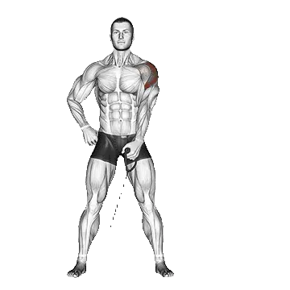

Elevación lateral en cable
Elevación lateral en cable permite consultar el peso medio y los estándares de fuerza como referencia dentro de hombros. Los músculos principales son Deltoides.

Peso medio: Intermedio
Referencia para una persona de nivel intermedio.
Peso medio de Elevación lateral en cable [1RM]
| Nivel | ||
|---|---|---|
| Principiante | 2 kg | 1 kg |
| Novato | 7 kg | 5 kg |
| Intermedio | 18 kg | 10 kg |
| Avanzado | 36 kg | 15 kg |
| Élite | 58 kg | 22 kg |
Nota: estos estándares son estimaciones de 1RM basadas en levantadores promedio. Pueden variar según el peso corporal, la edad y otros factores personales. Consulta los datos detallados en la tabla inferior.
Tu nivel actual
Calcula el 1RM estimado y nivel de Elevación lateral en cable
Calcula el 1RM estimado con el peso y las repeticiones reales y compáralo con el estándar por peso corporal.
Es una estimación. La técnica, el rango de movimiento y la fatiga pueden cambiar el resultado. Ver el método
Estándares de fuerza de Elevación lateral en cable (kg)
Hombres por peso corporal (kg) [1RM]
| Peso corporal | Principiante | Novato | Intermedio | Avanzado | Élite |
|---|---|---|---|---|---|
| 50 | 0 | 3 | 11 | 24 | 42 |
| 55 | 0 | 3 | 12 | 27 | 45 |
| 60 | 0 | 4 | 14 | 29 | 48 |
| 65 | 0 | 5 | 15 | 31 | 51 |
| 70 | 1 | 6 | 16 | 33 | 53 |
| 75 | 1 | 7 | 18 | 34 | 56 |
| 80 | 1 | 7 | 19 | 36 | 58 |
| 85 | 2 | 8 | 20 | 38 | 60 |
| 90 | 2 | 9 | 21 | 40 | 62 |
| 95 | 2 | 10 | 23 | 41 | 64 |
| 100 | 3 | 10 | 24 | 43 | 66 |
| 105 | 3 | 11 | 25 | 44 | 68 |
| 110 | 3 | 12 | 26 | 46 | 70 |
| 115 | 4 | 13 | 27 | 47 | 71 |
| 120 | 4 | 13 | 28 | 48 | 73 |
| 125 | 5 | 14 | 29 | 50 | 75 |
| 130 | 5 | 15 | 30 | 51 | 76 |
| 135 | 5 | 15 | 31 | 52 | 78 |
| 140 | 6 | 16 | 32 | 54 | 79 |
Hombres por edad [1RM]
| Edad | Principiante | Novato | Intermedio | Avanzado | Élite |
|---|---|---|---|---|---|
| 15 | 1 | 6 | 16 | 30 | 49 |
| 20 | 1 | 7 | 18 | 35 | 56 |
| 25 | 1 | 7 | 18 | 36 | 58 |
| 30 | 1 | 7 | 18 | 36 | 58 |
| 35 | 1 | 7 | 18 | 36 | 58 |
| 40 | 1 | 7 | 18 | 36 | 58 |
| 45 | 1 | 6 | 17 | 34 | 55 |
| 50 | 1 | 6 | 16 | 32 | 51 |
| 55 | 1 | 6 | 15 | 29 | 47 |
| 60 | 1 | 5 | 14 | 27 | 43 |
| 65 | 1 | 5 | 12 | 24 | 39 |
| 70 | 1 | 4 | 11 | 22 | 35 |
| 75 | 1 | 4 | 10 | 19 | 31 |
| 80 | 0 | 3 | 9 | 17 | 28 |
| 85 | 0 | 3 | 8 | 16 | 25 |
| 90 | 0 | 3 | 7 | 14 | 23 |
Mujeres por peso corporal (kg) [1RM]
| Peso corporal | Principiante | Novato | Intermedio | Avanzado | Élite |
|---|---|---|---|---|---|
| 40 | 1 | 4 | 7 | 12 | 18 |
| 45 | 2 | 4 | 8 | 13 | 19 |
| 50 | 2 | 4 | 8 | 14 | 20 |
| 55 | 2 | 5 | 9 | 14 | 21 |
| 60 | 2 | 5 | 9 | 15 | 21 |
| 65 | 2 | 5 | 10 | 15 | 22 |
| 70 | 3 | 6 | 10 | 16 | 22 |
| 75 | 3 | 6 | 10 | 16 | 23 |
| 80 | 3 | 6 | 11 | 17 | 23 |
| 85 | 3 | 6 | 11 | 17 | 24 |
| 90 | 3 | 7 | 11 | 18 | 24 |
| 95 | 4 | 7 | 12 | 18 | 25 |
| 100 | 4 | 7 | 12 | 18 | 25 |
| 105 | 4 | 7 | 12 | 19 | 26 |
| 110 | 4 | 8 | 13 | 19 | 26 |
| 115 | 4 | 8 | 13 | 19 | 27 |
| 120 | 4 | 8 | 13 | 20 | 27 |
Mujeres por edad [1RM]
| Edad | Principiante | Novato | Intermedio | Avanzado | Élite |
|---|---|---|---|---|---|
| 15 | 2 | 4 | 8 | 13 | 19 |
| 20 | 2 | 5 | 9 | 15 | 21 |
| 25 | 2 | 5 | 10 | 15 | 22 |
| 30 | 2 | 5 | 10 | 15 | 22 |
| 35 | 2 | 5 | 10 | 15 | 22 |
| 40 | 2 | 5 | 10 | 15 | 22 |
| 45 | 2 | 5 | 9 | 14 | 21 |
| 50 | 2 | 5 | 9 | 14 | 19 |
| 55 | 2 | 4 | 8 | 13 | 18 |
| 60 | 2 | 4 | 7 | 11 | 16 |
| 65 | 2 | 4 | 7 | 10 | 15 |
| 70 | 1 | 3 | 6 | 9 | 13 |
| 75 | 1 | 3 | 5 | 8 | 12 |
| 80 | 1 | 3 | 5 | 7 | 11 |
| 85 | 1 | 2 | 4 | 7 | 10 |
| 90 | 1 | 2 | 4 | 6 | 9 |
Nota: el peso indicado en máquinas y cables puede variar según el fabricante. Úsalo como referencia para comparar en equipos con condiciones similares.
Músculos trabajados
| Grupo | Músculos |
|---|---|
| Músculos principales | Deltoides |
| Músculos secundarios | Deltoides, Trapecio |
| Estabilizadores | Oblicuo externo |
| Agarre | Flexores del antebrazo |
Registra y analiza en la app Shiba
Consulta pesos, repeticiones y progreso en un solo lugar.
Cómo leer la tabla
| Nivel | Descripción | Distribución |
|---|---|---|
| Principiante | Domina la técnica correcta y entrena de forma constante durante al menos 1 mes. | Parte inferior 5% |
| Novato | Entrena de forma constante durante al menos 6 meses. | Top 80% |
| Intermedio | Entrena de forma constante durante al menos 2 años. | Top 50% |
| Avanzado | Entrena de forma constante durante más de 5 años. | Top 20% |
| Élite | Entrena este ejercicio de forma especializada durante más de 5 años. | Top 5% |